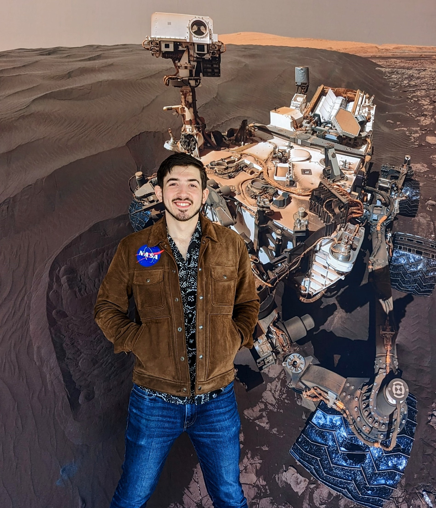

Molecular self-assembly
How cations choreograph the earliest guanine and urate assemblies out of prebiotic brines. From G-wires that recruit GMP, to biogenic reflectors, to the crystalline chemistry of gout.
Ångström scaleReading biology in the assembly, structure, and organization of minerals.
PhD candidate tracing life's fingerprint across the scales at which minerals record it, from the molecular assembly of prebiotic brines to the atomic strain in biogenic unit cells.
I am a PhD candidate in Earth and Planetary Sciences at Rutgers University, working with Shaunna Morrison. My committee includes Nathan Yee, Vikas Nanda, Paul Falkowski, and Richard Remsing.
My master's work with Henry Sun at UNLV documented how halophilic bacteria precipitate a calcite, struvite, and guanine mineral succession out of their own metabolic waste. That succession still frames what I do now: asking whether life leaves a readable signature in the atoms, the unit cells, and the aggregate textures of the minerals it forms.
The question runs in both directions. If a mineral can record the life that made it, then the same reading applies to a sample returned from somewhere that has never had a confirmed biosphere.

My dissertation reads biosignatures across the scales at which minerals record them, from the moment molecules first assemble in prebiotic brines to the way whole crystals align in a biomineralized tissue.
How cations choreograph the earliest guanine and urate assemblies out of prebiotic brines. From G-wires that recruit GMP, to biogenic reflectors, to the crystalline chemistry of gout.
Ångström scaleWhether life leaves measurable atomic strain in the minerals it precipitates. I am building a database of biogenic, biologically influenced, and abiotic carbonates and phosphates to test the idea.
Nanometer scaleWhether the way biominerals align at the aggregate scale, their crystallographic texture, is itself a biosignature carrying information about the life that made them.
Micrometer scaleClassical models grow a crystal one monomer at a time. The biomineralization literature shows a second route: ions cluster into higher-order species, prenucleation clusters, droplets, amorphous particles, and even whole nanocrystals, that attach to the growing solid. My work on guanine and urate precursors sits on these upper pathways, where the particle that attaches is already partly ordered before it arrives.